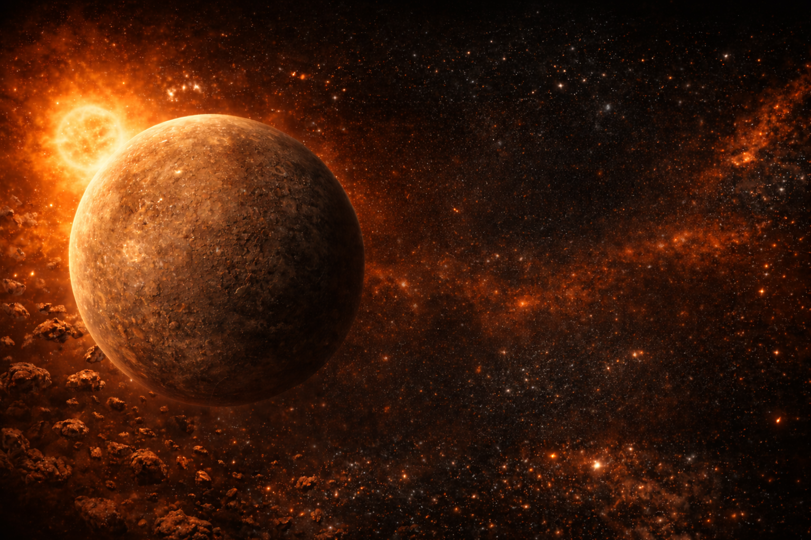
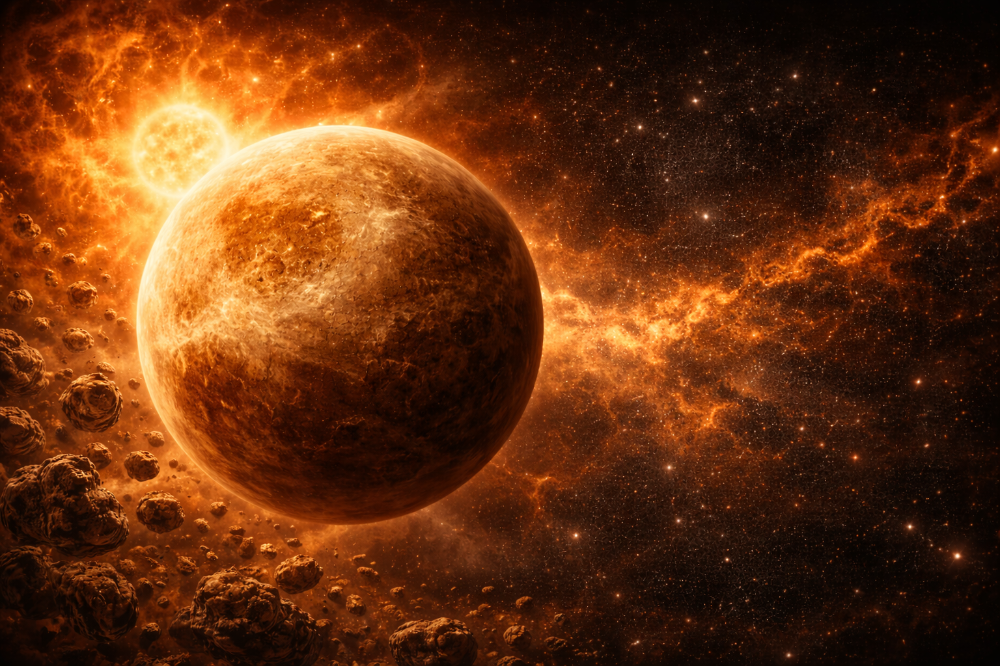
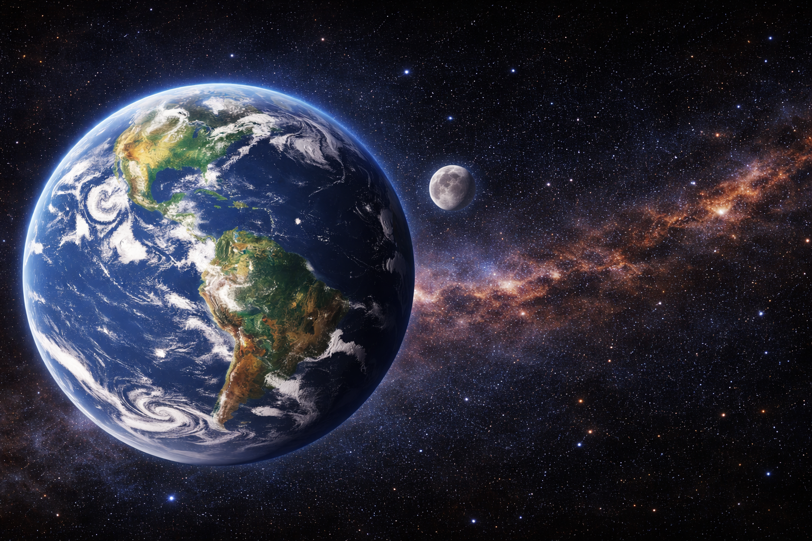
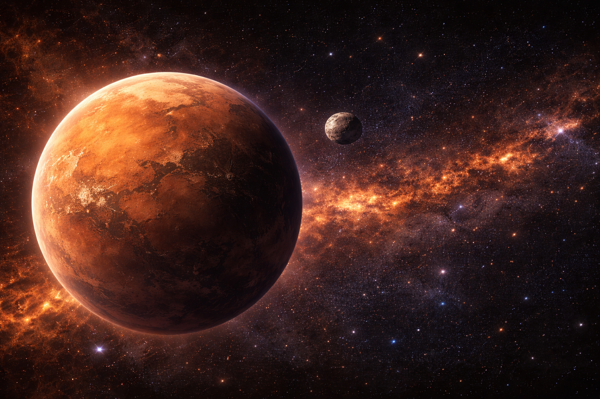
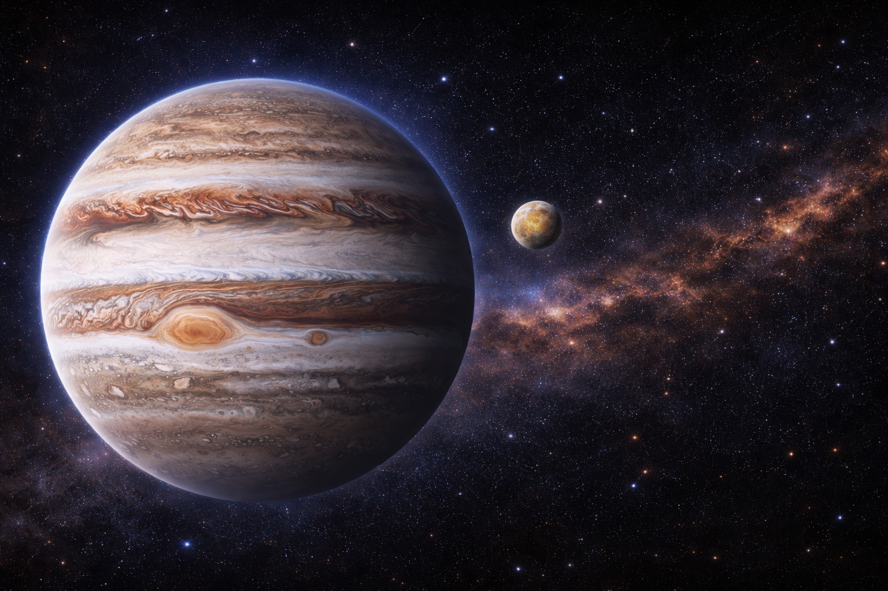
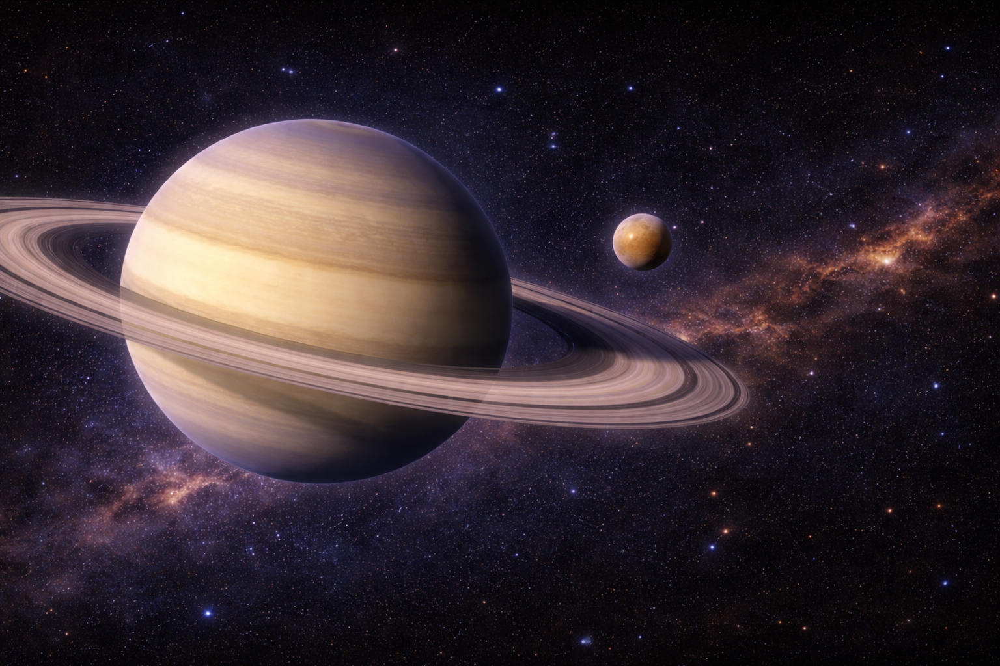
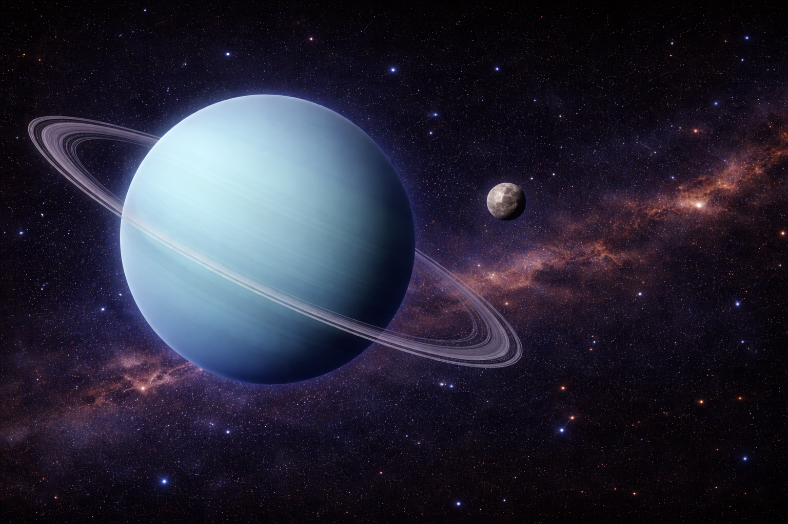
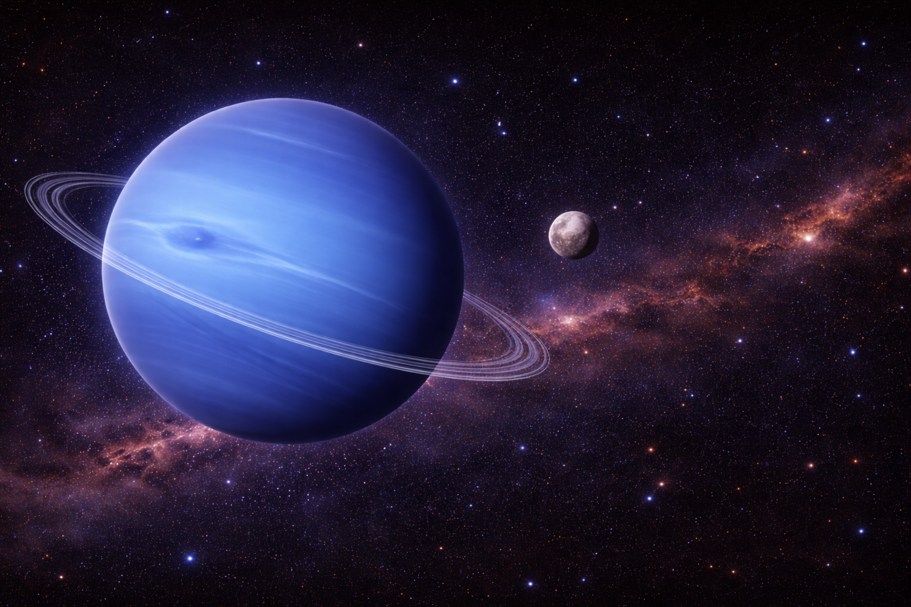

About this website
The project used images generated by ChatGPT. All the information is publicly available, but I selected a few key details and incorporated them into my project. My GitHub repository: Solar System Project
This project was completed by Yaroslav Pugachevsky for the course Web Design Fundamentals (COMP06294). The following resources were used to create this website:
 |
Mercury |
 |
Venus |
 |
Earth |
 |
Mars |
 |
Jupiter |
 |
Saturn |
 |
Uranus |
 |
Neptune |
The project used images generated by ChatGPT. All the information is publicly available, but I selected a few key details and incorporated them into my project. My GitHub repository: Solar System Project